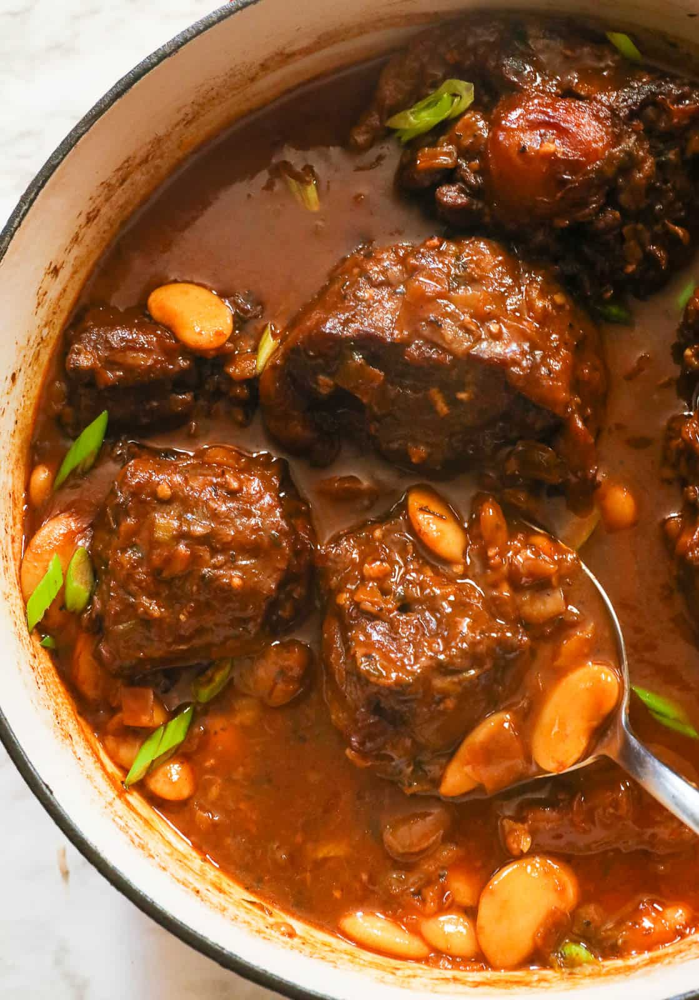

Delicious Oxtail Stew Recipe!

Ingredients
- Oxtail
- Onions
- Green Onions
- Scotch Bonnet
- Bouillon Cubes or Powder
- Garlic
- Thyme
- Salt
- White Pepper
- Beef Bouillon
- Pimento Seeds
- Browning
- Curry
- Tomato Paste
- Rub the oxtail with salt and pepper, and set aside. In a large pot,
heat oil over medium heat until hot, and then saute the oxtail,
frequently stirring while scraping any browned bits off the bottom until
the oxtail pieces are browned. If desired, drain the oil, leaving 2-3 tablespoons
- Seasonings - Add onions, green onions, garlic, thyme, allspice, Worcestershire
sauce, and smoked paprika, then stir for about a minute. Throw in the Scotch bonnet pepper,
tomato paste, bouillon, and curry powder, and stir for another minute.
- Then add about 4-6 cups of water; it is best to start with 4 cups, then add as needed
- Cook it Low and Slow - Bring to a boil and simmer until tender (depending on the oxtail size)
for about 2-3 hours (4-5 hours at high altitude), occasionally stirring so it does not stick to the pan.
- Add the Beans - About 20-30 minutes before removing it from the heat, add the broad
beans. Adjust the thickness with water or stock.
- Final Touch - Simmer for 20-30 minutes, and adjust salt to taste
Some More Delicious Recipes to Try: